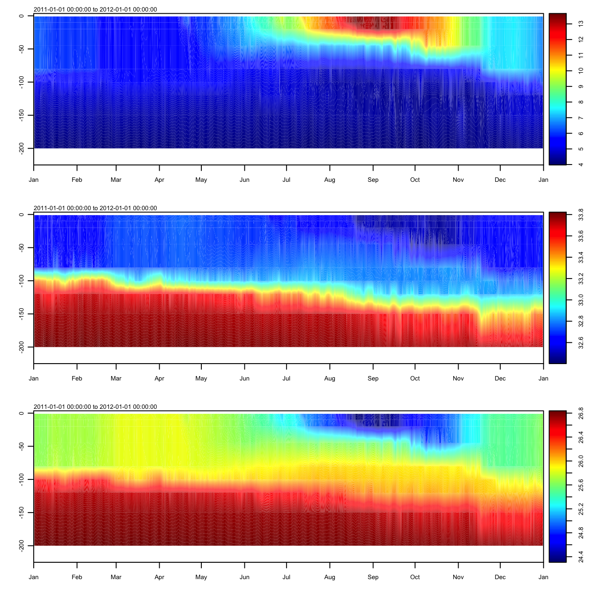
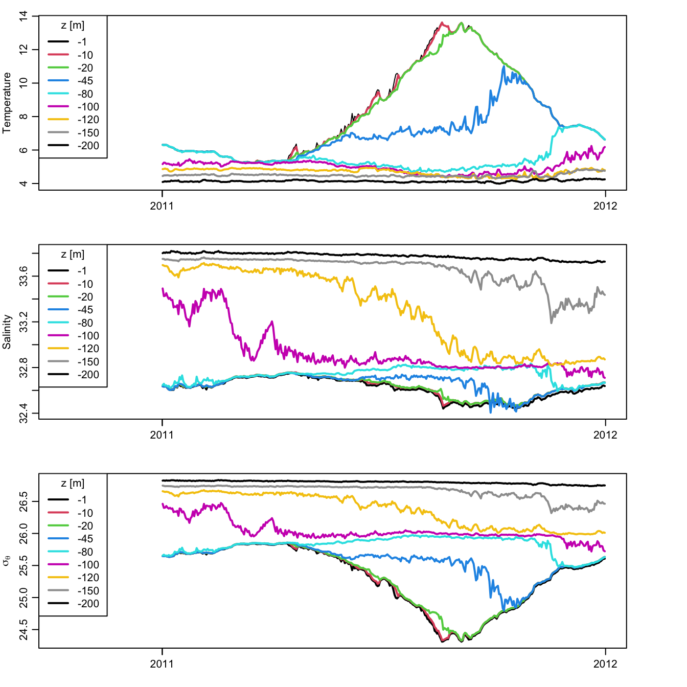
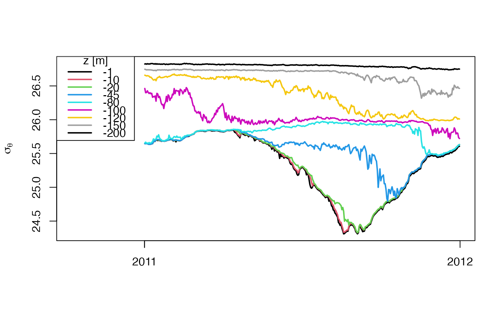

papa holds the temperature and salinity measured at Ocean Weather Station
Papa (50N, 145W) in the year 2010. Time and vertical coordinate are in
vectors papa$t and papa$z, while temperature, salinity and
\(\sigma_\theta\) are in the matrices papa$temperature,
papa$salinity and papa$sigmaTheta. This is an excerpt from a larger
dataset that spans 2007-06-08 to 2012-10-24, and it has been trimmed to just
those z values that are common to the larger dataset, namely -1, -10, -20,
-45, -80, -100, -120, -150, and -200m. Time is sampled daily, from
2011-01-01 12:00:00 to 2011-12-31 12:00:00 UTC.
data(papa, package="ocedata")Salinity was inferred from
https://www.pmel.noaa.gov/stnP/data/daily/s50n145w_dy.ascii and
temperature from
https://www.pmel.noaa.gov/stnP/data/daily/t50n145w_dy.ascii, as downloaded
in early 2015; PMEL changed its website subsequent to that date, and as of
early 2016 there seems to be no way to link directly to the data; instead,
one must use a graphical interface provided at
https://www.pmel.noaa.gov/ocs/data/disdel/, which includes filling out a
form identifying the user and purpose.
Although there is a data file for \(\sigma_\theta\) on the
NOAA website, here it was calculated with swSigmaTheta() in the
oce package.
The larger data set is described at http://www.pmel.noaa.gov/stnP/.
data(papa, package="ocedata")
xlim <- c(min(papa$t)-3*28*86400, max(papa$t)) # extra for legend
plot(papa$t, papa$temperature[,1], type='l', xlim=xlim,
xlab="", ylab="Temperature", ylim=range(papa$temperature))
for (i in 2:dim(papa$temperature)[2])
lines(papa$t, papa$temperature[,i], col=i, lwd=2)
legend("topleft", title="z [m]", lwd=2, legend=papa$z, col=1:length(papa$z), bg="white")

plot(papa$t, papa$salinity[,1], type='l', xlim=xlim,
xlab="", ylab="Salinity", ylim=range(papa$salinity), lwd=2)
for (i in 2:dim(papa$salinity)[2])
lines(papa$t, papa$salinity[,i], col=i, lwd=2)
legend("topleft", title="z [m]", lwd=2, legend=papa$z, col=1:length(papa$z), bg="white")

plot(papa$t, papa$sigmaTheta[,1], type='l', xlim=xlim,
xlab="", ylab=expression(sigma[theta]), ylim=range(papa$sigmaTheta), lwd=2)
for (i in 2:dim(papa$sigmaTheta)[2])
lines(papa$t, papa$sigmaTheta[,i], col=i, lwd=2)
legend("topleft", title="z [m]", lwd=2, legend=papa$z, col=1:length(papa$z), bg="white")
